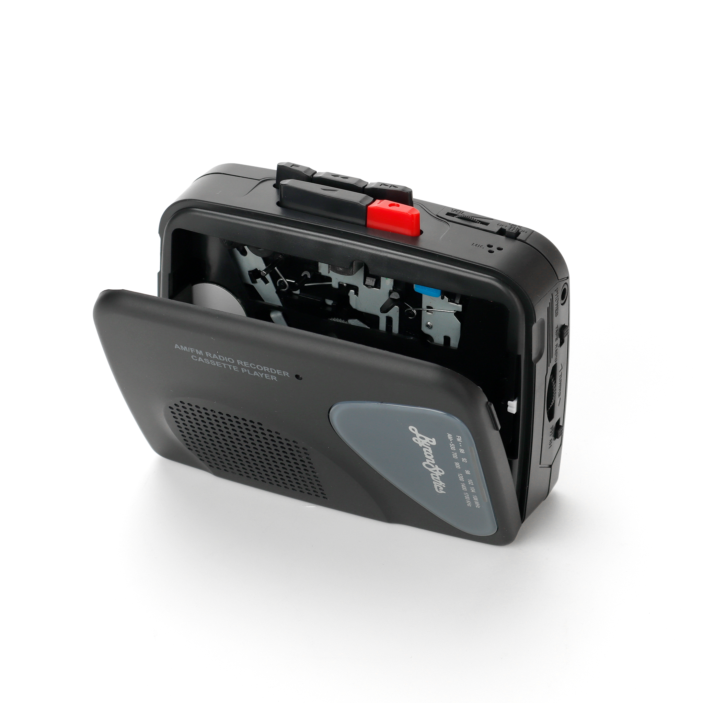
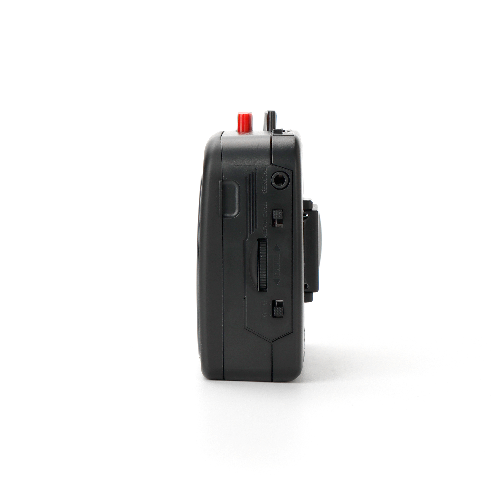
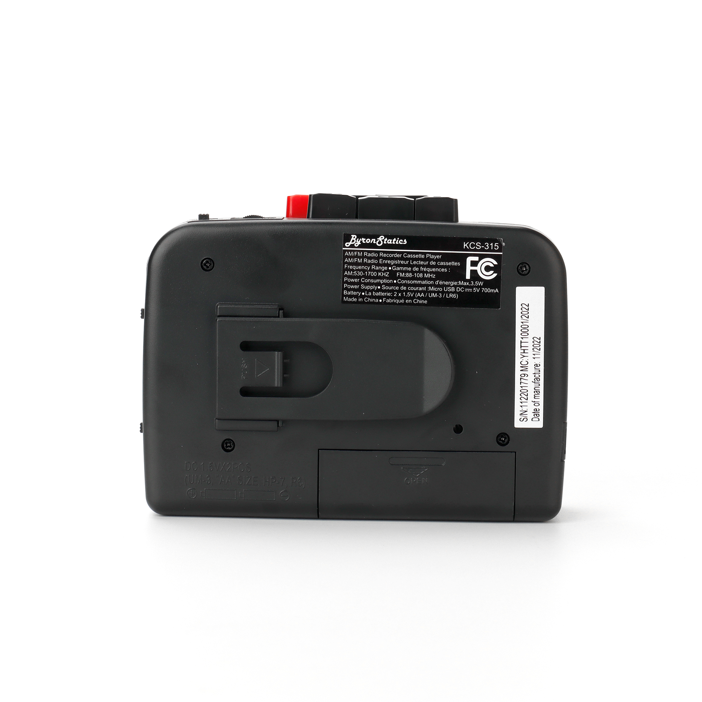
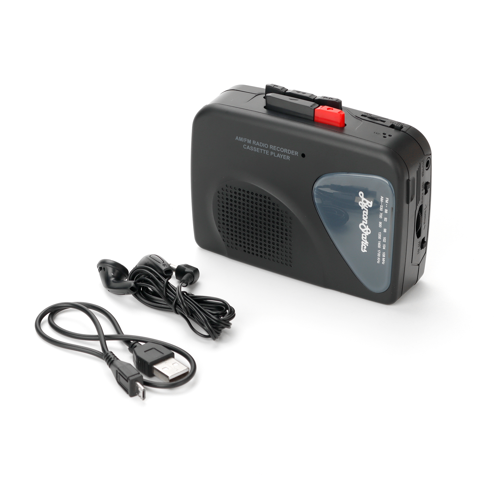
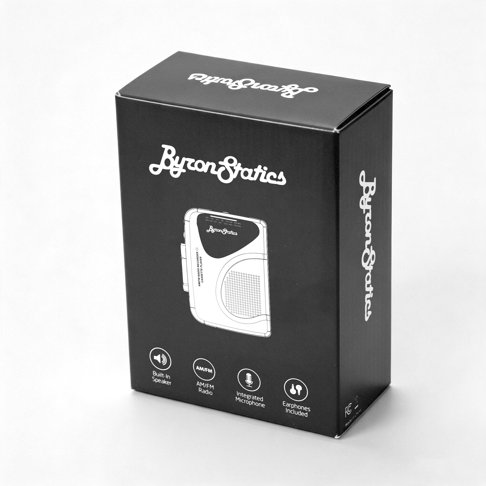
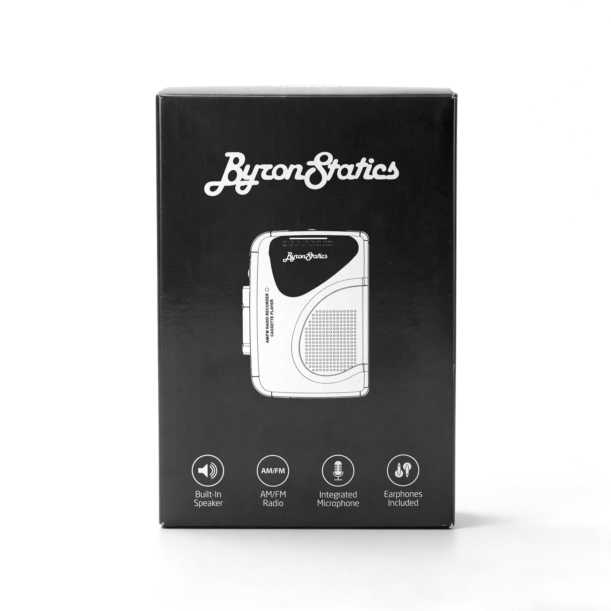

Image: KCS-315 in Black, 3/4 front view






Click any image to view full size
Cassette Player • Recorder
KCS-315
★ 4.0 / 5 (192 reviews on Walmart)
Portable AM/FM radio cassette recorder with Voice Activation System (VAS), built-in speaker and microphone. Easy to use — just plug in and press play.
Specifications
- Type
- Portable cassette player + AM/FM radio + voice recorder
- AM Range
- 520–1710 kHz
- FM Range
- 88–108 MHz
- Power Output
- 3.5W max
- Power
- 2× AA batteries (not included) OR Micro USB 5V 700mA
- Audio Out
- 3.5mm earphone jack (earbuds included)
- Recording
- Voice Activation System (VAS) with auto-stop
- Built-in
- Speaker + microphone
- Compliance
- FCC
Available Colors
Black
Teal
Pink